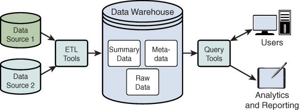
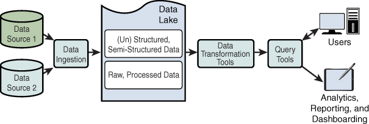
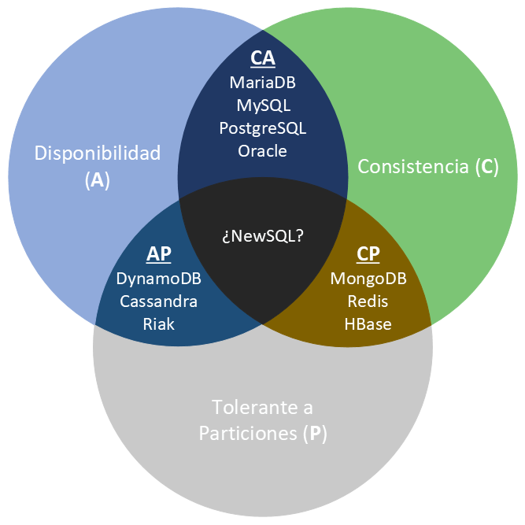

1.3. Conceptos de almacenamiento¶
Diseñar la solución (criterio a)) es elegir dónde vive el dato y qué garantías ofreces (transacción estricta o disponibilidad ante fallos de red).

Base de datos relacional¶
Guarda registros en tablas (filas = hechos, columnas = atributos) con un esquema declarado. El lenguaje habitual es SQL. Los índices aceleran búsquedas y joins.
Encajan muy bien en OLTP: muchas transacciones cortas, integridad, un esquema estable.
Límite en Big Data: escalan sobre todo en vertical. Cuando una tabla ya no cabe en un servidor (o el join no termina), el relacional deja de ser el almacén único. Sigue siendo el origen típico del que ingieres hacia el lago o el almacén analítico.
Base de datos NoSQL¶
Pensadas para volumen, variedad y escala horizontal. No hay un solo NoSQL:
| Familia | Idea | Ejemplo de uso |
|---|---|---|
| Documento | JSON/BSON con esquema flexible | Perfiles, catálogos |
| Clave-valor | get/put muy rápidos |
Caché, sesiones |
| Columnar / wide-column | Familias de columnas | Series, logs masivos |
| Grafo | Nodos y aristas | Fraude, recomendaciones |
MongoDB Query Language (MQL) es el ejemplo que verás más en tutoriales de documentos; no es “el SQL de todo NoSQL”.
¿Sirven para Big Data? Sí, cuando el problema es distribuir y crecer. No sustituyen a un relacional si necesitas transacciones ACID estrictas (transferencia bancaria, stock con bloqueo).
Dataset¶
Un dataset (conjunto de datos) es una colección que tiene sentido tratar junta: tweets de una campaña, lecturas de una estación, las facturas de 2026. Puede vivir en CSV, JSON, tablas, Parquet o en un bucket.
No es un producto: es la unidad de trabajo del análisis.
Data warehouse (almacén de datos)¶
Repositorio centralizado, pensado para BI y análisis, con histórico. Los datos suelen llegar por ETL desde ERP, CRM, SCM… Es una foto periódica, no el sistema donde el cajero pica la venta.
Suele ir con modelos dimensionales y, a menudo, OLAP. El esquema se decide antes de cargar (schema-on-write).
Data lake¶

Repositorio que guarda el dato en su formato original (estructurado o no). Encaja con ciencia de datos y ML: no tiras el bruto por si mañana cambia la pregunta.
Carga continua desde IoT, logs, APIs. El esquema se aplica al leer. El riesgo clásico es el data swamp: un lago sin catálogo, calidad ni dueño.
| Data warehouse | Data lake | |
|---|---|---|
| Dato | Limpio, modelado | Bruto o ligeramente curado |
| Esquema | Al escribir | Al leer |
| Usuarios típicos | Negocio, BI | Ingeniería y ciencia de datos |
| Pregunta | Ya la conoces | Puede aparecer después |
En la práctica muchas organizaciones tienen los dos (o un lakehouse): lago para bruto y almacén para el dato listo para el cuadro de mando.
ACID¶
Garantías de las bases transaccionales (casi siempre relacionales):
| Letra | Significado | En una frase |
|---|---|---|
| Atomicity | Todo o nada | Si falla el segundo INSERT, no queda el primero |
| Consistency | El esquema y las reglas se cumplen | No hay saldo negativo si la regla lo prohíbe |
| Isolation | Nadie ve a medias | Otra sesión no lee “un registro de los dos” |
| Durability | Lo confirmado no se pierde | Tras COMMIT, un corte de luz no lo borra |
ACID usa un control pesimista (bloqueos) porque asume que el fallo puede ocurrir. Eso ralentiza frente a un sistema que solo escribe en memoria.
No toda base “relacional” es ACID al 100 % si la configuras en modo relajado; para transacciones de negocio sí debes exigir estas propiedades.
Teorema CAP¶
En un almacén distribuido, ante una partición de red, no puedes tener a la vez:
- Consistencia: toda lectura ve el último escrito (o error).
- Availability: toda petición recibe respuesta (aunque no sea la última).
- Partition tolerance: el sistema sigue si se corta la red entre nodos.

En internet y en un clúster, P no es opcional: las particiones ocurren. La decisión real suele ser CP (mejor parar lecturas dudosas) o AP (mejor responder, aunque algún nodo vaya atrasado).
| Tipo | Prioriza | Ejemplo de conversación de aula |
|---|---|---|
| CP | C + P | MongoDB/HBase en configuraciones que no sirven datos viejos |
| AP | A + P | Dynamo-style: siempre hay respuesta, consistencia eventual |
| CA | C + A | Relacional en un sitio: no reparte el dato, así que P no entra en juego |
Muchos productos se configuran (secundarios legibles o no). No memorices logos: pregunta qué pasa si se parte la red.
BASE¶
Diseño típico de distribuidas que eligen A + P:
- Basically Available: siempre hay respuesta (éxito o error controlado).
- Soft state: dos lecturas seguidas pueden diferir aunque no hayas escrito tú.
- Eventual consistency: al final los nodos se ponen de acuerdo.
¿BASE para el TPV?
No. Una venta, un asiento contable o un stock crítico quieren ACID. BASE encaja en timelines, carritos no críticos, catálogos replicados, IoT.
Cómo elegir (criterio a)¶
- ¿Hay transacción de negocio que no puede verse a medias? → relacional ACID (OLTP).
- ¿El volumen o la variedad rompen un solo servidor? → clúster + NoSQL o ficheros distribuidos.
- ¿La pregunta de negocio ya está clara y se repetirá? → warehouse + modelo dimensional.
- ¿Aún no sabes qué preguntarás o el bruto es heterogéneo? → lake, y luego curas hacia el warehouse.